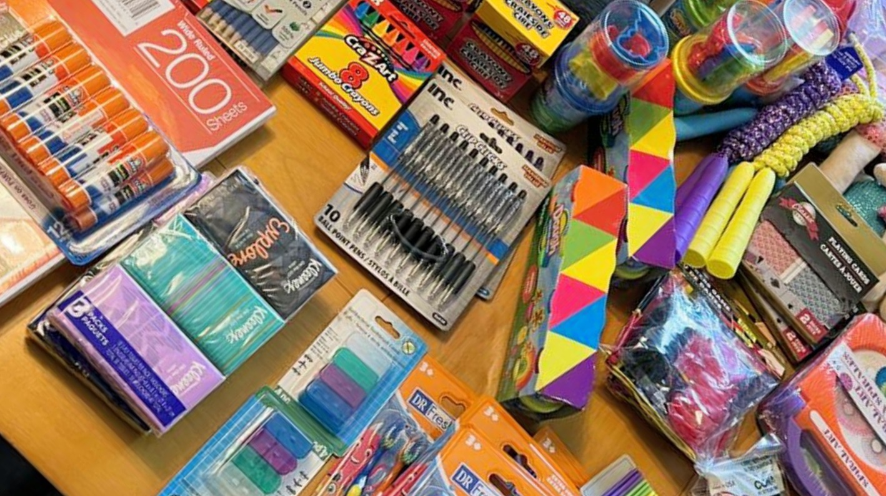
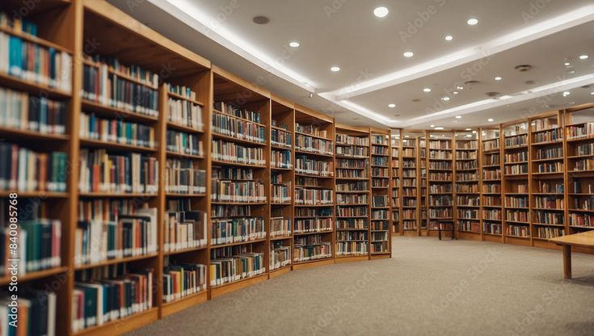

Sua Doação Transforma Vidas
Cada contribuição, independente do valor, faz diferença real na vida
de milhares de pessoas. Com transparência total, aplicamos 100% das
doações em nossos projetos sociais.
Formas de Doar
1. Doação Financeira
- PIX: doacoes@esperancasolidaria.org.br
-
Transferência Bancária:
-
Banco do Brasil - Agência 1234-5 - Conta Corrente 67890-1
- CNPJ: 12.345.678/0001-90
-
Cartão de Crédito: Doação recorrente ou única (em
breve)
2. Doação de Materiais
- Materiais escolares (cadernos, lápis, mochilas, livros)
-
Equipamentos de informática (computadores, notebooks, tablets)
- Instrumentos musicais
- Materiais esportivos (bolas, uniformes, equipamentos)
- Alimentos não perecíveis
- Roupas e calçados em bom estado
Ponto de Coleta: Rua da Esperança, 1234 - Centro,
São Paulo/SP
Horário: Seg a Sex, 8h–18h | Sáb, 9h–13h
3. Doação de Serviços
- Assessoria jurídica, contábil ou de marketing
- Manutenção predial e reformas
- Transporte e logística
- Impressão de materiais gráficos
4. Nota Fiscal Paulista
Doe seus créditos da Nota Fiscal Paulista para a Esperança
Solidária! CNPJ: 12.345.678/0001-90
Incentivos Fiscais
- Pessoa Física: até 6% do IR devido
- Pessoa Jurídica: até 2% do IR devido
Emitimos recibo para todas as doações acima de R$ 50,00
Campanhas Ativas
Campanha: Volta às Aulas 2025

Meta: Arrecadar 500 kits de material escolar
completo
Progresso: 320 kits arrecadados (64%)
Prazo: até 31 de janeiro de 2025
Valor do kit: R$ 85,00
Campanha: Reforma da Biblioteca

Meta: R$ 50.000,00 para reforma e ampliação
Arrecadado: R$ 32.450,00 (65%)
Prazo: até 30 de março de 2025
Melhorias previstas: nova pintura, mobiliário novo,
climatização, ampliação do acervo, espaço infantil temático